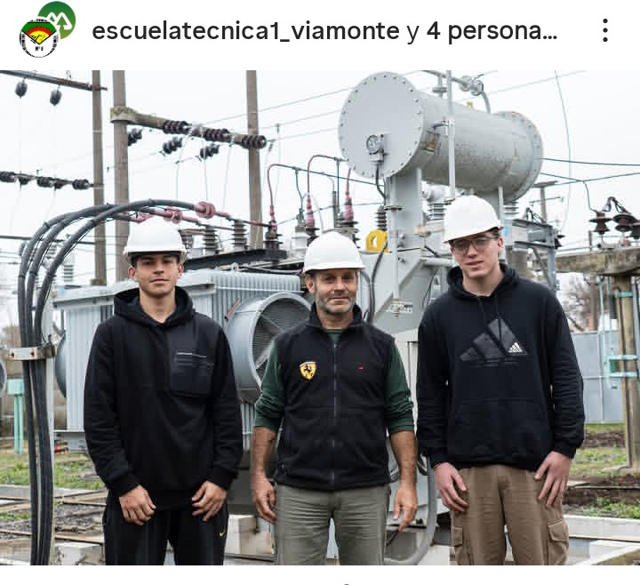
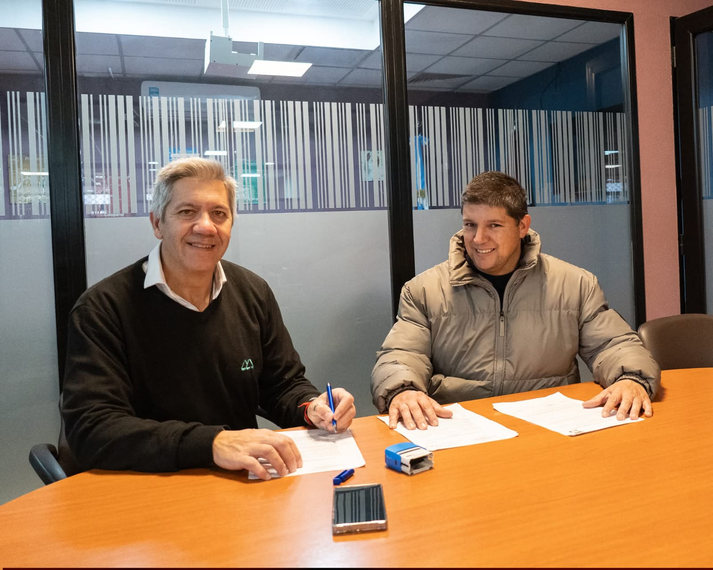
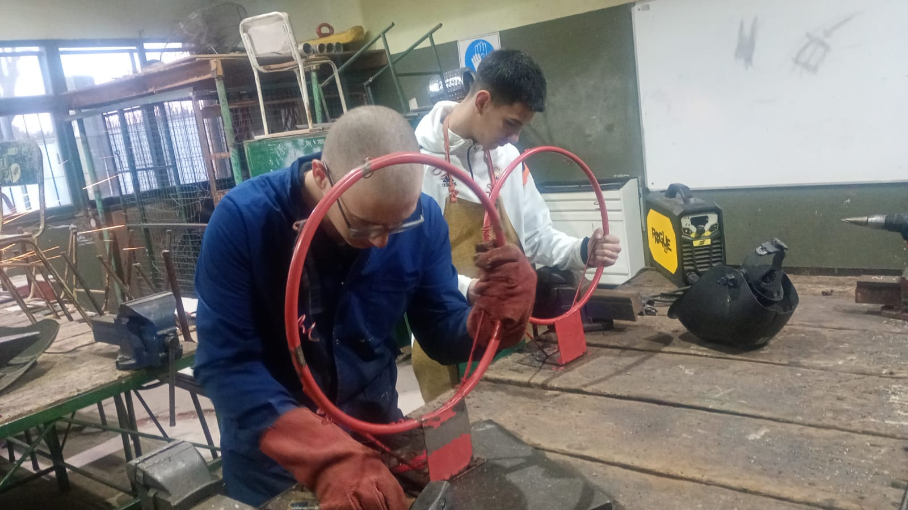

.jpeg)



Históricamente, la formación en el área eléctrica de baja tensión se limitaba a intervenciones domiciliarias que se simulaban mediante un tablero o un carro que representaba una vivienda o una fábrica. Sin embargo, hace unos 10 años la institución dio un giro estratégico hacia la práctica real, superando la simulación e incorporando el trabajo directo sobre instalaciones trifásicas.
Prácticas Profesionalizantes
La formación culmina con un fuerte compromiso social a través delas Prácticas Profesionalizantes que realizan los alumnos de sexto y séptimo año. Mediante una articulación con el área de Desarrollo Humano y Social del municipio, se atienden demandas de trabajos domiciliarios en la comunidad. Para cadas intervención, dicha oficina municipal compra las herramientas y materiales necesarios, los cuales se separan estrictamente de aquellos destinados al uso diario del taller o a las prácticas internas. De esta manera, los estudiantes consolidan su perfil técnico interviniendo en escenarios reales, transformando las necesidades del entorno en una valiosa experiencia de aprendizaje.


Para acompañar la evolución pedagógica, de cuarto a séptimo año se lleva a cabo un plan progresivo de mejoras de infraestructura que siempre se organiza por partes. Este plan abarca desde la renovación del mobiliario del sector de tornería y las instalaciones eléctricas, En la actualidad, se trabaja de manera organizada con sistemas de mantenimiento, evaluando compras e intervenciones planificadas en diferentes plazos: a corto y mediano plazo se gestiona la pintura, el cambio de ventanas, las mejoras en el sistema de canaletas y la instalación de una jabalina de puesta a tierra, mientras que a largo plazo se proyecta la renovación integral de la iluminación.